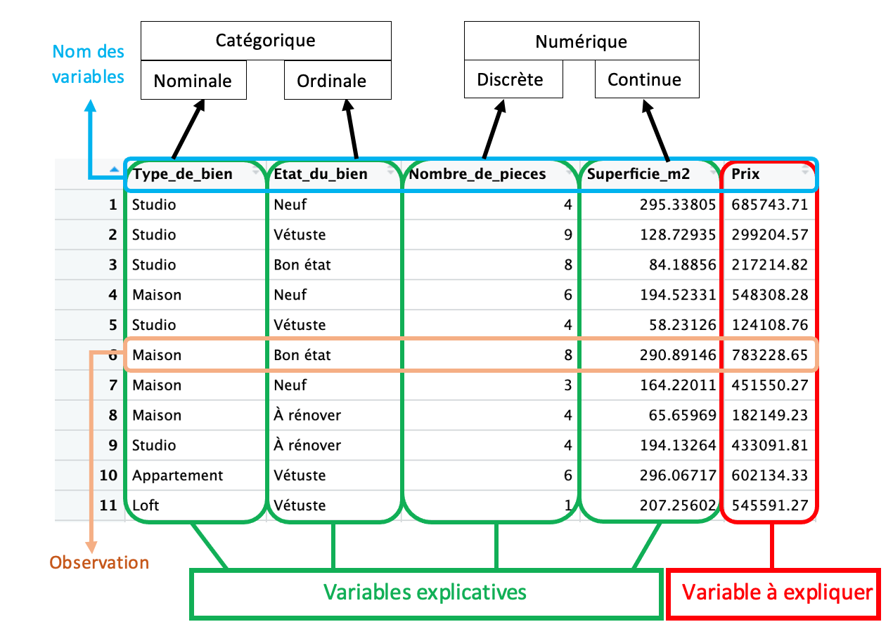
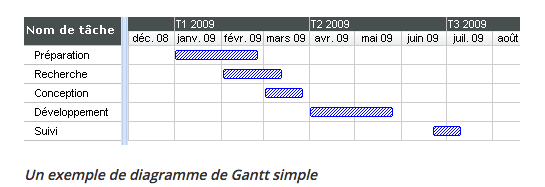
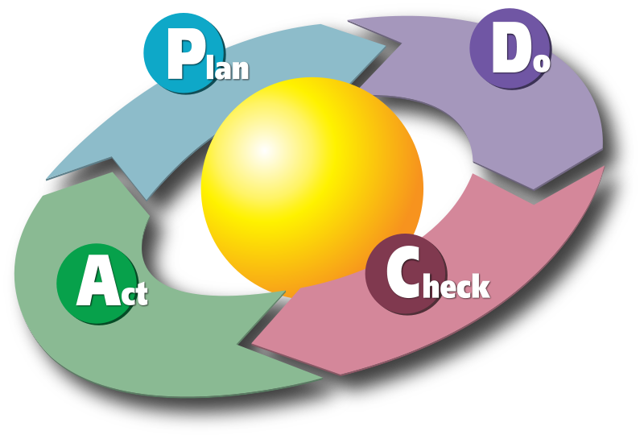
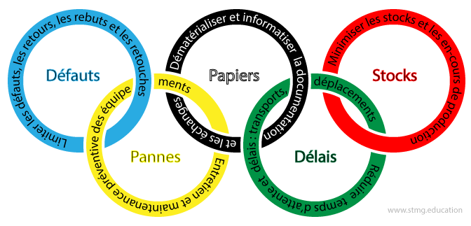

DATA Camp M2
Analyse de données
Rappels Fondamentaux
Qu’est ce qu’une variable ?
Une variable statistique est une caractéristique ou une mesure que l’on peut attribuer à chaque individu d’une population ou d’un échantillon.
Tableau du type de variable :

Vocabulaire autour de la variable :
Lors d’une analyse statistique, on distingue deux types principaux de variables :
- La variable à expliquer (à prédir, ou à estimer) : Y
- Les variables explicatives (prédictives ou estimatrices) : X_i
Tout l’exercice reside à établir la relation la plus pertinente entre les variables explicatives X_i et la variable à expliquer Y.
Tableau des synonymes :
Catégorique = Qualitative.
Numérique = Quantitative.

Exemple concret :
Je cherche à estimer le prix d’une maison en fonction de 4 caractéristiques : le type de bien, l’état du bien, le nombre de pièces et la superficie en m2.
Pour ce faire, j’ai à ma disposition une base de données intitulée “data_immobilier” (générée aléatoirement) que je traite en R.
Avant tout, je dois avoir ces éléments en tête :

Ensuite, je peux passer à l’étape suivante.
Traitement des données
Peu importe leur origine, les bases de données nécessitent presque toujours un traitement avant d’être exploitables. De la collecte à l’enregistrement, des irrégularités s’introduisent, causant des erreurs lors de l’exploitation. Le traitement vise à corriger ou à gérer ces irrégularités. Bien que chaque base de données présente ses propres spécificités et problèmes, les quatre points que nous aborderons par la suite sont courants et doivent être maîtrisés
Gestion des valeurs manquantes
Les valeurs manquantes, souvent représentées par les NaN, sont parmi les anomalies les plus couramment rencontrées dans les bases de données. Plusieurs stratégies peuvent être adoptées face à ces valeurs :
Conversion : On surpasse le NaN en le convertissant en une autre valeur, comme un flottant.
- Avantage : Conservation de données.
- Désavantage : Introduction d’un biais potentiellement significatif.
Code :
# Convertir les NaN en 0 (ou une autre valeur) en R.
df[is.na(df)] <- 0# Convertir les NaN en 0 (ou une autre valeur) en python.
df.fillna(0, inplace=True)imputation : remplacer les valeurs manquantes par des estimations (la moyenne ou la médiane des autres valeurs).
- Avantage : Conservation de données.
- Désavantage : Introduction d’un biais potentiellement significatif.
Code :
## Utiliser la moyenne pour imputer en R
df$column_name[is.na(df$column_name)] <- mean(df$column_name, na.rm = TRUE)# Utiliser la moyenne pour imputer en python
df['column_name'].fillna(df['column_name'].mean(), inplace=True)suppression : supprimer les lignes avec des NaN.
- Avantage : On limite le biais .
- Désavantage : perte d’information générale.
Code :
# Supprimer les lignes contenant des NaN en R
df <- df[complete.cases(df), ]# Supprimer les lignes contenant des NaN
df.dropna(inplace=True)Il n’y a pas de solution parfaite, certains cas vont favoriser certains choix, mais la suppression reste quand même la plus sur en terme de qualité de l’information, à privilègier des que possible.
Group_by
La fonction group_by est utilisé pour regrouper des données en fonction de certaines variables catégorielles. Cela permet d’effectuer des opérations et des analyses spécifiques à chaque groupe, et comprendre les comportements ou les anomalies spécifiques à chaque groupe.
Concretement, si l’on reprend la base data_immobilier, faire une group_by sur la variable Type_de_bien nous permettra de faire une etude sur le groupe maison, loft, appartement et studio séparemment.
R :
# Groupement des données par Type_de_bien et calcul de la moyenne des autres variables
data_grouped <- data_immobilier %>% #Nouveau DataFrame "data_grouped"
group_by(Type_de_bien) %>% #Selection par groupe "Type de bien"
summarise( #Affiche les infomations
Prix_moyen = mean(Prix, na.rm = TRUE), #La moyenne de prix pour chaque groupe
Superficie_moyenne = mean(Superficie_m2, na.rm = TRUE), #La moyenne de superficie pour chaque groupe
Nombre_moyen_de_pieces = mean(Nombre_de_pieces, na.rm = TRUE) #La moyenne de Nombre de piece pour chaque groupe
)
print(data_grouped) #AffichagePython :
# Groupement des données par Type_de_bien et calcul de la moyenne des autres variables
data_grouped = data_immobilier.groupby('Type_de_bien').agg({
'Prix': 'mean',
'Superficie_m2': 'mean',
'Nombre_de_pieces': 'mean'
}).reset_index()
print(data_grouped)Merge
La fonction merge est utilisée pour fusionner deux dataframes sur la base d’au moins une colonne commune. Cette fonction est extremement utile si l’on souhaite combiner des données provennant de differentes bases pour une même analyse.
Application concrète avec la base de données data_immobilier:
On a une autre base de données, data_Localisation, avec les variables Superficie_m2 et Localisation. En utilisant la fonction merge, on va fusionner les deux bases de données en utilisant la colonne commune, Superficie_m2 , pour avoir une base de données plus riche.
# Exemple de code R utilisant merge
data_complete <- merge(data_immobilier, data_Localisation, by = "Superficie_m2", all = TRUE)# Exemple de code Python utilisant merge
data_complete = pd.merge(data_immobilier, data_Localisation, on='Superficie_m2', how='outer')
variables dummys
Les variables dummy sont utilisées pour convertir des variables catégorielles en variables numériques.
Objectifs : Utiliser ces variables dans des analyses statistiques et des modèles de machine learning qui requièrent des entrées numériques. Comment créer des variables dummy ? Exemple concret :
On reprend le dataframe qui a une desormais colonne catégorielle nommée Localisation avec des noms de villes. On crée les variables dummy, soit pour chaque catégorie unique dans la colonne Localisation deviendra une nouvelle colonne dans le dataframe.
# En R
data_with_dummies <- model.matrix(~ Localisation - 1, data = data_complete) %>%
as.data.frame()# En python
data_with_dummies = pd.get_dummies(data_complete, columns=['Localisation'], prefix='', prefix_sep='')Dans le nouveau dataframe, data_with_dummies, chaque ville unique de la colonne Localisation originale a été transformée en une nouvelle colonne. Si une observation dans la colonne Localisation originale était “Paris”, alors la colonne LocalisationParis serait marquée avec un 1, et toutes les autres colonnes de ville seraient marquées avec des 0.

Attention aux problémes de multicolinéarité, supprimer une colonne pour une utilisation dans certains modèles.
Statistiques Descriptives
Les statistiques descriptives permettent de résumer, décrire et comprendre les données.
Pour les variables quantitatives, on utilise :
Moyenne : La valeur moyenne.
Médiane : La valeur centrale.
Mode : La valeur la plus fréquente.
Min,Max= valeur minimal et maximum. Écart Type : Mesure de la dispersion des valeurs.
# En python
describe(data_quantitative)# En R
summary(data_quantitative)Pour les variables qualitatives, on utilise:
Fréquences : Nombre de fois qu’une catégorie apparaît.
Pourcentages : Proportion d’une catégorie par rapport au total.
# En python
# Calculer les fréquences
freq = data_qualitative.value_counts()
# Calculer les pourcentages
perce = frequencies / len(data_qualitative) * 100# En R
# Calculer les fréquences
frequencies <- table(data_qualitative)
# Calculer les pourcentages
percentages <- prop.table(frequencies) * 100On illustre également par des graphiques descriptifs:
Histogrammes et Diagrammes en Barres : Pour montrer la distribution des données.
Boîtes à Moustaches (Boxplots) : Pour montrer la médiane, quartiles et valeurs aberrantes.
# En python
# Créer un histogramme pour les données quantitatives
plt.hist(data_quantitative, bins=5, edgecolor='k')
plt.xlabel("Valeurs")
plt.ylabel("Fréquence")
plt.title("Histogramme des données quantitatives")
plt.show()# En R
# Créer un histogramme pour les données quantitatives
ggplot(data = data.frame(x = data_quantitative)) +
geom_histogram(aes(x = x), binwidth = 5, fill = "blue", color = "black") +
labs(x = "Valeurs", y = "Fréquence", title = "Histogramme des données quantitatives")La statistique descriptive offre une première compréhension des données, indispensable avant toute analyse plus approfondie. Elle permet de déceler des tendances, anomalies, ou relations à explorer davantage. C’est une étape indispensable à ne surtout pas negliger.
Premiers modèles
Modèles linéaires
Def regression : Un ensemble de méthodes pour analyser la relation d’une variable à expliquer par une ou plusieurs autres variables explicatives.

Méthode des moindres carrés ordinaires :
Objectif : Regarder à quel point la droite obtenue est meilleure que la droite de la moyenne des observations. Donc, \(R^2 = \min\left(\sum(y - \hat{y})^2\right)\)
Moindres carrés ajustés :
Le \(R^2\) carré ordinaire peut seulement augmenter ou rester constant par l’ajout d’une nouvelle variable. Concretement, ne réduira jamais la capacité explicative du modèle. Le adjusted - \(R^2\) est une methode par pénalisation qui compense ce défaut. Il faut donc le privilègier à l’etude.
P-value :
C’est un indicateur statistique utilisé pour évaluer la significativité d’un résultat. On pose que l’hypothèse nulle (généralement l’absence d’effet ou de relation) est vraie. Une p-value faible suggère que les observations sont peu probables sous l’hypothèse nulle, indiquant ainsi une évidence forte contre l’hypothèse nulle et en faveur de l’hypothèse alternative, donc qu’il y a probablement une relation.
Une p-value inférieure à un seuil défini (souvent 0,05) est généralement interprétée comme statistiquement significative, suggérant que le modèle ou la variable examinée a un effet réel et non dû au hasard.
Concrètement,
p-value < 5%, la variable est statistiquement significative, donc probablement explicative, on la garde dans le modèle.
p-value > 5%, la variable n’est pas statistiquement significative, donc probablement pas explicative, on l’exclut du modèle.
Gestion des outliers :
Certaines observations extrêmes, ou outliers, peuvent fausser les résultats en raison de leur décalage significatif par rapport au reste des données. Il faut les identifier et, si nécessaire, les exclure en amont de l’analyse. Pour ce faire, on utilise souvent des méthodes telles que DFFITS et DFBETAS. Ces techniques aident à déterminer si une observation individuelle est particulièrement influente et si elle devrait être considérée comme un outlier devant être exclu de l’analyse pour obtenir des résultats plus fiables.
Multicollinéarité :
La multicollinéarité dans les modèles de régression linéaire est un phénomène où deux ou plusieurs variables explicatives sont fortement corrélées entre elles. Cette forte corrélation peut causer des problèmes dans l’estimation des coefficients de régression, rendant les résultats moins fiables. Pour mesurer le degré de multicollinéarité dans un modèle, on utilise souvent l’indice VIF.
VIF < 5, peu de risque de multicollinéarité .
VIF > 5, risque de multicollinéarité.
Méthode Backward élimination pour affiner la précision du modèle :
Initialement, on a une variable à expliquer et plusieurs variables explicatives.
On cherche la meilleure combinaison possible entre ces variables pour definir ce modèle, du point de vue de la significativité à travers la p-value, et de l’explicativité à travers le adjusted- \(R^2\).
Une idée serait de tester toutes les combinaisons une à une, en théorie cela fonctionnerait, mais cela n’est pas réaliste au vu de la quantité de calcul nécessaire.
la méthode Backward élimination consiste alors à évaluer le modèle par itération suivant le schéma suivant :
1 - Je fais mon modèle avec l’ensemble des variables.
2 - Je supprime LA variable qui à la p-value > 5%, la plus élevé.
3 - Je réévalue le modèle
4 - Je regarde comment le adjusted-\(R^2\) à évoluer :
Il augmente, c’est bien le modèle est plus explicatif
Il diminue, c’est mauvais, la variable avait quand même une importance
- Je refléchis à la conserver ou non si la p-value est pas trop haute.
5 - Je répète les étapes 2,3 et 4 autant de fois que nécessaire.
Codes :
Régression linéaire simple :
#var1 -> a expliquer
#var2 -> explicative
Reg1<-lm(var1~var2, data=df)
summary(Reg1) # Le détail
abline(Reg1) #Representation de la regression linéaire Régression linéaire multiple :
#var1 -> a expliquer
Reg1<-lm(var1~var2+var3+var4, data=df)
summary(Reg1) # Le détail
abline(Reg1) #Representation de la regression linéaire Regression logistique
Def regression logistique : Utilisée pour des problèmes de classification ( variable dependante bianire ).
Principe: Modélise la probabilité que la variable dépendante appartienne à une catégorie particulière.
# Régression logistique en R (y binaire à expliquer)
glm_model <- glm(y ~ x1 + x2, data = dataset, family = "binomial")
summary(glm_model)# Régression logistique en Python (y binaire à expliquer)
from sklearn.linear_model import LogisticRegression
model = LogisticRegression()
model.fit(X, y)Regression ridge et lasso
Rigde
Usage: Utilisée pour traiter le problème de multicollinéarité dans les données. Ajoute une pénalité au carré des coefficients. Principe: Minimise une somme pondérée des carrés des résidus et des carrés des coefficients.
# Régression Ridge en R
library(glmnet)
ridge_model <- glmnet(x, y, alpha = 0, lambda = lambda_value)# Régression Ridge en Python
from sklearn.linear_model import Ridge
model = Ridge(alpha=1.0)
model.fit(X, y)Lasso
Usage: Usage: Permet de sélectionner des variables en réduisant les coefficients de certaines à zéro. Principe: Semblable à Ridge, mais ajoute une pénalité absolue aux coefficients.
# Régression Lasso en R
library(glmnet)
lasso_model <- glmnet(x, y, alpha = 1, lambda = lambda_value)# Régression Lasso en Python
from sklearn.linear_model import Lasso
model = Lasso(alpha=1.0)
model.fit(X, y)Test d’independance
Les tests d’indépendance, sont utilisés en statistique pour déterminer si deux variables semblent être liées ou non. L’intérêt principal de ces tests est de vérifier l’existence d’une association ou d’une relation entre les variables.
Cas 1: Les deux variables sont nominales
# Tableaux des effectifs croisés ou fréquences croisées
tab <- table(var1, var2)
print(tab)
prop_table <- prop.table(tab, margin = 2)
print(prop_tab)
# Représentation graphique des profils
barplot(tab, legend = TRUE, beside = TRUE)
barplot(prop_table, legend = TRUE, beside = TRUE)
# Test d'indépendance du khi-carré
chi_sq_test <- chisq.test(tab)
print(chi_sq_test)
# Si chi_sq_test$p.value < 0.05 & all(chi_sq_test$expected > 5)
# Alors test significatif et effectifs espérés supérieurs à 5, il y a dependance.
# Analyse des résidus standardisés via leur représentation avec la fonction mosaicplot()
mosaicplot(tab)Cas 2: Une variable est quantitative et l’autre est nominale binaire
# var1 -> quantitative
# var2 -> nominale binaire
# Sous-populations définies par la variable binaire
groupe1 <- df$var1[df$var2 == "Oui"]
groupe2 <- df$var1[df$var2 == "Non"]
# Indicateurs statistiques
summary(groupe1)
summary(groupe2)
# Representation graphique
ggplot(df, aes(x = variable_nominale, y = variable_quantitative)) +
geom_boxplot() +
theme_minimal()
# Tester la normalité
shapiro1 <- shapiro.test(groupe1)
shapiro2 <- shapiro.test(groupe2)
print(shapiro1)
print(shapiro2)
# Si shapiro1$p.value > 0.05 et shapiro2$p.value > 0.05
# Normalité non rejetté
# Procédure paramétrique
# Tester l'égalité des variances
var_test <- var.test(groupe1, groupe2)
print(var_test)
# Si var_test$p.value > 0.05
# Égalité des variances non rejeté
# Faire un test de comparasion des moyennes
t_test <- t.test(var_quanti ~ var_nominale, var.equal = TRUE)
print(t_test)
# Si var_test$p.value < 0.05
# Égalité des variances rejetée
# les variables ne sont pas indépendantes
# Faire un test de comparasion des moyennes
t_test <- t.test(var_quanti ~ var_nominale, var.equal = FALSE)
print(t_test)
# Procédure non paramétrique (shapiro1$p.value < 0.05 ou shapiro2$p.value < 0.05)
# Tester l'égalité des variances
ansari_test <- ansari.test(groupe1, groupe2)
print(ansari_test)
# Si ansari_test$p.value > 0.05
# Égalité des variances non rejetée
# Faire un test de comparaison des medianes
wilcox_test <- wilcox.test(var_quanti ~ var_nominale)
print(wilcox_test)
# Si ansari_test$p.value < 0.05
# Égalité des variances rejetée
"Les distributions conditionnelles de X connaissant Y diffèrent d'un paramètre d'échelle"Cas 3 : une variable est quantitative et l’autre nominale non binaire
# var1 -> quantitative
# var2 -> nominale non binaire
# Indicateurs statistiques
indicateurs <- df %>%
group_by(var2) %>%
summarise(moyenne = mean(var1),
mediane = median(var1),
ecart_type = sd(var1),
minimum = min(var1),
maximum = max(var1),
q1 = quantile(var1, 0.25),
q3 = quantile(var1, 0.75))
indicateurs
# Représentations graphiques
ggplot(df, aes(x = choux$var2, y = choux$var1)) +
geom_boxplot(outlier.colour = "red", outlier.size = 2) +
scale_fill_manual(values = c("lightgray", "lightblue"), guide = FALSE) +
theme(axis.text.x = element_text(angle = 45, hjust = 1)) +
labs(x = "", y = "Ventes ", title = "Boîtes à Moustaches des ...")
# Test de normalité
normality <- df %>%
group_by(var2) %>%
summarise(shapiro.test(var1)$p.value)
normality
# si tous les shapiro.test(var1)$p.value > 0.05
# Normalité non rejetté
# procédure Paramétrique
bartlett_res <- bartlett.test(var1 ~ var2, data = df)
print(bartlett_res)
#si bartlett_res$p.value > 0.05
#l’égalité des variances n’est pas rejetée
oneway_res <- oneway.test(var1 ~ var2, data = df, var.equal = TRUE)
print(oneway_res)
# Vérifier l'indépendance:
##si oneway_res$p.value > 0.05
##alors Les variables sont indépendantes (pas de relation significative)
##si oneway_res$p.value < 0.05
##Les variables ne sont pas indépendantes (relation significative)
#si bartlett_res$p.value < 0.05 (l’égalité des variances est rejetée)
#Les variables ne sont pas indépendantes
#si au moins un shapiro.test(tonnage)$p.value < 0.05
#Procédure Non paramétrique
fligner_res <- fligner.test(var1 ~ var2, data = df)
print(fligner_res)
#si fligner_res$p.value > 0.05
##l’égalité des variances n’est pas rejetée
kruskal_res <- kruskal.test(var1 ~ var2, data = df)
print(kruskal_res)
## Vérifier l'indépendance
## Si kruskal_res$p.value > 0.05
##Les variables sont indépendantes (pas de relation significative)
## Si kruskal_res$p.value < 0.05
##Les variables ne sont pas indépendantes (relation significative)
## Comparaison deux-à-deux
pairwise_wilcox_res <- pairwise.wilcox.test(df$var_quanti, df$var_nominale)
print(pairwise_wilcox_res)
#si fligner_res$p.value > 0.05
#l’égalité des variances est rejetée
'Les distributions conditionnelles de X connaissant Y diffèrent d un paramètre d echelle'Cas 4 :Les deux variables sont quantitatives
# Indicateurs statistiques
summary(var1)
summary(var2)
# Représentation du nuage de points
ggplot() +
geom_point(aes(x = var1, y = var2)) +
theme_minimal()
# Tester la normalité des couples d'observations
mshapiro_test <- shapiro.test(cbind(var1, var2))
print(mshapiro_test)
# Si mshapiro_test$p.value > 0.05
# Normalité non rejeté
## Test de non-corrélation de Pearson
pearson_test <- cor.test(var1, var2, method = "pearson")
print(pearson_test)
## Si la p-value < 0,05 on peut rejeter l'hypothèse nulle de non-corrélation,
## Conclure qu'il y a une corrélation significative entre les deux variables
# Si mshapiro_test$p.value < 0.05
# Normalité rejetée
# Test de non-corrélation monotone de Spearman
spearman_test <- cor.test(var1, var2, method = "spearman")
print(spearman_test)
# Si la p-value < 0,05 on peut rejeter l'hypothèse nulle de non-corrélation,
# Conclure qu'il y a une corrélation significative entre les deux variablesExcel/VBA
Les démarches suivantes s’appliquent sous Windows, il se peut que la version IOS diffère.
Écrire des macros en VBA, c’est comme apprendre à donner des instructions précises à Excel pour qu’il effectue automatiquement des tâches répétitives, sans que vous ayez à les refaire manuellement.
Étapes simples pour débuter
Accéder à l’éditeur VBA
- Allez dans Excel, puis activez l’onglet Développeur si nécessaire. Dans l’onglet développeur, cliquez sur Visual Basic pour ouvrir l’éditeur VBA.
Créer une macro
- Dans l’éditeur, insérez un module (Insertion > Module). Vous pourrez y écrire votre code.
Écrire un exemple de macro
Commencez par des tâches simples, comme écrire dans une cellule.
Exemple :
Sub first_macro()
Range("A1").value = "Test Macro" ' Change la valeur de A1
End SubCe code dit à Excel : Change la valeur de la cellule A1 par ” Test Macro “.
Exécuter la macro
Retournez dans Excel, appuyez sur Alt + F8, sélectionnez votre macro (first_macro) et cliquez sur Exécuter.
Commencez par enregistrer une macro avec l’outil Enregistreur de macro d’Excel (dans l’onglet Développeur). Cela génère automatiquement du code VBA que vous pouvez observer et modifier pour apprendre.
Innovation digitale et transition écologique
Selon l’INSEE :
“L’innovation désigne l’introduction sur le marché d’un produit ou d’un procédé nouveau ou significativement amélioré par rapport à ceux précédemment élaborés par l’unité légale.
Deux types d’innovation sont distingués : les innovations de produits (biens ou services) et de procédés (incluant les innovations d’organisation et de marketing).
Plus précisément :
l’innovation de produits inclut les changements significatifs de design et les biens ou services numériques. Elle exclut la revente en l’état de nouveaux biens ou services et les changements de nature esthétique ;
l’innovation de procédés concerne la production et les méthodes de développement, la logistique et la distribution, le système d’information et de communication, les tâches administratives et la comptabilité, l’organisation des procédures, la gestion des relations avec les fournisseurs, l’organisation du travail, les processus de décision, les ressources humaines, le marketing, l’emballage, la tarification et le service après-vente.”(INSEE, 2020).
Schumpeter, le père de la théorie de l’innovation
Joseph Schumpeter, économiste du 20ᵉ siècle, a expliqué comment l’innovation est le moteur principal de la croissance économique.
Rôle clé de l’innovation
- Schumpeter distingue plusieurs types d’innovations :
Nouveaux produits (ex. le smartphone).
Nouvelles méthodes de production (ex. impression 3D).
Nouveaux marchés (ex. l’économie numérique).
Nouvelles organisations (ex. chaînes logistiques).
Destruction créatrice
L’innovation bouleverse l’économie en rendant obsolètes certaines activités (par ex., le courrier papier remplacé par les emails) tout en créant de nouvelles opportunités.
C’est ce processus de “destruction créatrice” qui renouvelle en permanence les structures économiques.
Le rôle de l’entrepreneur
- Schumpeter place l’entrepreneur au centre de l’innovation. C’est lui qui prend des risques, introduit des changements, et stimule la concurrence.
Un cercle vertueux : l’économie circulaire
L’économie circulaire est un modèle économique qui cherche à limiter les déchets et à optimiser l’utilisation des ressources naturelles.
Principe de base : réduire, réutiliser, recycler (3R)
- Réduire : Utiliser moins de matières premières.
- Réutiliser : Prolonger la vie des produits (ex. réparer un téléphone au lieu d’en acheter un neuf).
- Recycler : Transformer les déchets en nouvelles ressources (ex. plastique recyclé).
Boucles fermées
- Contrairement à l’économie traditionnelle (linéaire), où les ressources sont extraites, utilisées, puis jetées, l’économie circulaire fonctionne en boucle. Par exemple, une bouteille en verre peut être recyclée pour fabriquer une nouvelle bouteille.
Dans ce concept, les déchets des uns sont les matières premières des autres.
Avantages
- Moins de déchets et de pollution.
- Conservation des ressources naturelles.
- Création de nouvelles activités (ex. recyclage, réparation, conception éco-responsable).
L’économie circulaire cherche à innover en adoptant un modèle durable et respectueux de l’environnement, en transformant les déchets en ressources.
Gestion de projet digital
La gestion de projet digital regroupe l’ensemble des activités nécessaires pour planifier, organiser et superviser un projet numérique (souvent une application), afin d’atteindre les objectifs fixés dans les délais impartis et selon les attentes définies.
La gestion de projet : son origine
On situe les origines de la gestion de projet moderne au début du 20ᵉ siècle avec le Fordisme. Henry Ford révolutionne la production en introduisant le travail à la chaîne. Chaque étape est minutieusement planifiée pour maximiser la productivité. Toyota améliore le modèle fordiste avec des méthodes comme le “Juste à Temps” (JIT) et le “Kaizen” (amélioration continue). L’accent est mis sur la réduction des gaspillages et l’implication des équipes, ouvrant la voie à des concepts clés comme l’optimisation et la flexibilité.
Cet art est basé sur des concepts majeurs :
Diagramme de Gantt
- Un outil visuel qui montre les tâches d’un projet, leur durée, et leur ordre.
- Les barres horizontales représentent les activités, permettant de suivre l’avancement.
Exemple :

Source
Roue de Deming (PCDA)
Un cycle itératif pour l’amélioration continue :
- Plan (planifier) : Définir les objectifs et les actions nécessaires.
- Do (faire) : Exécuter le plan.
- Check (vérifier) : Mesurer et analyser les résultats.
- Act (agir) : Ajuster et améliorer en fonction des retours.
Utilisé pour garantir que chaque étape est maîtrisée et optimisée.

Source
Les 0 Olympiques (Objectif “Zéro”)
Inspiré du toyotisme, cela vise :
- Zéro défaut : Produire sans erreur.
- Zéro pannes : Maintenir régulièrement pour éviter les pannes.
- Zéro papiers : Réduire les frais administratifs(monétaire et temporel).
- Zéro délais : Minimiser les retards.
- Zéro stocks : Éviter les surplus inutiles.

Source
Méthode des 5S (complément toyotiste)
- Seiri (Trier), Seiton (Ranger), Seiso (Nettoyer), Seiketsu (Standardiser), Shitsuke (Soutenir).
- Une méthode pour organiser efficacement les espaces de travail et garantir un environnement productif.
Chemin critique (Critical Path Method)
- Analyse des tâches pour identifier celles qui déterminent la durée totale du projet.
- Cela permet de se concentrer sur les étapes les plus critiques pour respecter les délais.
Une application, c’est quoi ?
Une application est un programme informatique conçu pour répondre à un besoin précis, comme envoyer des messages, faire des achats en ligne ou gérer des données. Elle est utilisée par des utilisateurs via des interfaces (smartphones, ordinateurs).
Pourquoi une application ?
Une application est créée pour résoudre un problème ou simplifier une tâche, c’est une solution qui répond à un besoin, par exemple :
Commander un repas sans avoir à se déplacer.
Gérer des rendez-vous professionnels.
Analyser des données dans une entreprise.
Penser design et interface
Une application bien conçue doit :
Être simple à utiliser : l’utilisateur ne doit pas se perdre ou être frustré.
Être agréable visuellement : des couleurs, polices et boutons clairs.
S’adapter à tous les appareils : ordinateurs, smartphones, tablettes (design “responsive”).
La culture applicative, c’est comprendre qu’une application est une combinaison entre ce que l’utilisateur voit (frontend) et la technologie qui fonctionne en arrière-plan (backend), avec comme objectif de rendre la vie plus simple et agréable grâce à un bon design et une utilité claire.
Rigueur est mère de réussite : le génie logiciel
Pour atteindre ses objectifs de façon rigoureuse, il est possible d’appliquer plusieurs concepts :
- Le software engineering (ou génie logiciel) est la discipline qui consiste à concevoir, développer, tester, et maintenir des logiciels de manière organisée et efficace.
Conception structurée
Avant de coder, on planifie comment le logiciel va fonctionner (quelles sont ses fonctionnalités, sa structure). Cela inclut des étapes comme la création de diagrammes ou l’écriture d’un cahier des charges.
Bonnes pratiques de code
Écrire du code de qualité est crucial pour garantir que le logiciel soit lisible, réutilisable, et facile à maintenir. Voici quelques bonnes pratiques :
DRY (Don’t Repeat Yourself) : Éviter de dupliquer le code ; si une fonctionnalité doit être réutilisée, elle doit être écrite une seule fois et utilisée partout.
KISS (Keep It Simple, Stupid) : Rendre le code aussi simple que possible pour éviter des solutions inutiles ou complexes.
SOLID : Ensemble de principes qui facilitent la conception orientée objet :
S : Single Responsibility Principle (chaque classe doit avoir une seule responsabilité).
O : Open/Closed Principle (le code doit être ouvert à l’extension mais fermé à la modification).
L : Liskov Substitution Principle (les sous-classes doivent pouvoir remplacer leurs classes parentes).
I : Interface Segregation Principle (les interfaces doivent être spécifiques à un usage).
D : Dependency Inversion Principle (les modules de haut niveau ne doivent pas dépendre de modules de bas niveau, mais des abstractions).
PEP8 (Python Enhancement Proposal) : Un guide de style pour écrire du code Python clair et lisible, couvrant des aspects comme les indentations, les noms de variables, et les espaces.
Structurer un projet
Un projet bien structuré est essentiel pour être déployable en production et maintenable dans le temps. Cela inclut :
Une organisation claire des fichiers et des dossiers.
Une séparation entre le code source, les tests, et la configuration.
Une documentation complète expliquant le fonctionnement du logiciel et les étapes pour contribuer au projet.
Tests et qualité
Tester un logiciel garantit qu’il fonctionne correctement et répond aux besoins.
- Tests unitaires : Vérifient des petites parties du code (ex. une seule fonction).
- Tests d’intégration : Vérifient que différentes parties du code fonctionnent ensemble.
- Automatisation des tests : Les outils comme pytest (en Python) permettent d’automatiser les tests pour gagner du temps.
Pour renforcer la qualité, on utilise des linters (ex. pylint, flake8) qui analysent le code pour repérer les erreurs de style ou de logique avant qu’elles ne causent des problèmes.
Collaboration et gestion des versions
Le développement logiciel est souvent un travail d’équipe. Des outils comme Git permettent de :
- Gérer différentes versions du code.
- Suivre l’historique des modifications.
- Collaborer efficacement en évitant les conflits entre les contributions des développeurs.
Adopter des patterns de design
Les design patterns sont des solutions éprouvées pour résoudre des problèmes fréquents de conception logicielle. Par exemple :
- Singleton : Garantir qu’une classe n’ait qu’une seule instance.
- Factory : Centraliser la création d’objets complexes.
- Observer : Réagir aux changements d’état dans un système.
Le Zen of Python
Une philosophie de développement Python, illustrée par des principes comme :
- “Beautiful is better than ugly” (un code lisible est préférable).
- “Simple is better than complex” (la simplicité est essentielle).
- “Errors should never pass silently” (les erreurs doivent être explicites).
Ces pratiques sont essentielles pour concevoir des logiciels efficaces, maintenables et collaboratifs.
Pour conclure, le génie logiciel, c’est comme construire une maison : il faut des plans solides, des matériaux adaptés (le code), un contrôle qualité (tests), et un design qui facilite les rénovations futures (maintenance).
Commencer sur de bonnes bases : Python
Les fonctions
Une fonction est un bloc de code qui effectue une tâche spécifique. Vous pouvez la réutiliser plusieurs fois.
Exemple :
def dire_bonjour(nom):
return f"Bonjour, {nom} !"
print(dire_bonjour("Alice"))Ici, la fonction dire_bonjour prend un nom et retourne un message personnalisé.
Tests unitaires
Les tests unitaires permettent de vérifier qu’une partie précise de votre code (comme une fonction) fonctionne correctement.
Exemple avec la bibliothèque unittest :
import unittest
def addition(a, b):
return a + b
class TestAddition(unittest.TestCase):
def test_positif(self):
self.assertEqual(addition(2, 3), 5)
if __name__ == "__main__":
unittest.main()Cela permet de détecter les erreurs dès que le code change.
Objets et classes (Programmation orientée objet)
Python permet de créer des classes, des “modèles” pour structurer vos données et comportements.
Exemple :
class Animal:
def __init__(self, nom):
self.nom = nom
def parler(self):
return f"{self.nom} fait un bruit."
chien = Animal("Rex")
print(chien.parler()) # Rex fait un bruit.Une classe regroupe des données (nom) et des comportements (parler).
Environnements virtuels (avec Docker)
Un environnement virtuel permet d’isoler les dépendances (bibliothèques, versions de Python) d’un projet pour éviter les conflits avec d’autres projets.
- Avec Python :
python -m venv mon_env
source mon_env/bin/activate # Active l'environnement
pip install numpy # Installe une bibliothèque uniquement pour cet environnement- Avec Docker (outil pour des environnements plus complexes) :
Docker crée des conteneurs, qui isolent tout un système (pas seulement Python).
Exemple d’un fichier Dockerfile :
FROM python:3.9
WORKDIR /app
COPY . .
RUN pip install -r requirements.txt
CMD ["python", "main.py"]Cela garantit que votre application fonctionnera partout de la même manière.
En résumé, maîtriser ces bases vous aide à écrire un code réutilisable, fiable, et bien organisé, tout en travaillant dans des environnements adaptés.
Plus on est de pro, plus on rit
De votre rôle de professionnel de la donnée, dans les projets, vous serez amenez à travailler avec divers métiers, il est important de comprendre les fonctionnements et les missions de vos futurs collaborateurs.
Parmi ces individus avec lesquels vous allez collaborer fréquemment :
Le Product Manager (PM)
- Rôle : Définit la stratégie et les objectifs d’un produit ou d’un projet en s’appuyant sur des analyses de données.
- Collaboration : Il travaille avec des data scientists et data analysts pour comprendre les tendances utilisateurs et prendre des décisions stratégiques basées sur les données.
Le Développeur Backend
- Rôle : Construit les systèmes qui collectent et rendent accessibles les données (APIs, bases de données).
- Collaboration : Il travaille avec les data engineers pour intégrer les pipelines de données et avec les data scientists pour fournir les données nécessaires à leurs analyses.
Le Développeur Frontend
- Rôle : Développe des interfaces utilisateur (sites web, tableaux de bord, applications) pour visualiser ou interagir avec les données.
- Collaboration : Il travaille avec des data analysts et des business intelligence analysts pour présenter les données de manière compréhensible et esthétique.
Le Spécialiste en Cybersécurité
- Rôle : Protège les systèmes et les données contre les attaques et les intrusions.
- Collaboration : Il s’associe à des data governance specialists et des data engineers pour sécuriser les pipelines de données et garantir la conformité aux régulations.
Le Cloud Architect
- Rôle : Conçoit les infrastructures cloud pour héberger et traiter les données à grande échelle.
- Collaboration : Il travaille avec des data engineers et des big data engineers pour s’assurer que les systèmes cloud répondent aux besoins de stockage et de calcul.
Le Consultant en Transformation Digitale
- Rôle : Aide les entreprises à intégrer les données dans leurs processus décisionnels et leurs outils numériques.
- Collaboration : Il collabore avec des chief data officers, data scientists et business intelligence analysts pour orienter les projets.
L’UX Designer (Designer d’expérience utilisateur)
- Rôle : Conçoit des interfaces utilisateur et des parcours fluides en se basant sur les données utilisateurs.
- Collaboration : Il utilise les insights des data analysts et des product managers pour optimiser l’expérience utilisateur.
L’Ingénieur DevOps
- Rôle : Automatise et optimise le déploiement des applications, y compris les modèles d’apprentissage automatique ou les systèmes de traitement de données.
- Collaboration : Il travaille avec les machine learning engineers et data engineers pour déployer les solutions en production.
L’Analyste Marketing
- Rôle : Utilise les données pour mesurer l’efficacité des campagnes publicitaires et comprendre le comportement des clients.
- Collaboration : Il collabore avec les data analysts et les business intelligence analysts pour extraire et interpréter les métriques marketing.
Le Responsable de la Conformité (Compliance Officer)
- Rôle : S’assure que l’entreprise respecte les lois et régulations liées aux données (comme le RGPD).
- Collaboration : Il travaille avec les data governance specialists pour encadrer l’usage des données de manière légale et éthique.
Ces métiers feront certainement parti de l’écosystème auquel vous appartiendrez et contribuerons à vos projets de près ou de loin.
Comment ça marche ?
Frontend (partie visible) :
C’est l’interface que vous voyez et utilisez (boutons, formulaires, pages web). Elle est conçue pour être intuitive et agréable à utiliser.
Backend (partie invisible) :
C’est la “machinerie” qui fait fonctionner l’application. Elle traite les données, exécute les calculs et gère les demandes de l’utilisateur.
Exemple : Sur une page web d’achat en ligne, vous pouvez voir un bouton “Commander”, parfaitement mis en valeur pour que vous puissiez cliquer dessus sans trop chercher (frontend), quand vous cliquerez sur “Commander”, votre commande sera enregistrée et votre paiement validé (backend).